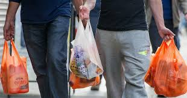

Post on Sunday, 20 Aug 2017 / Linda Sully
Low awareness on recycling among Malaysians“This shows that there is still a large portion of solid waste being disposed in landfills and not deviated to recycle,” he says. It also means that Malaysia is very much behind compared with a number of developed countries.... More
Post on October 16, 2014 / Rizalman Hammim
3R to protect and conserve environment
MPMA president Lim Kok Boon said the MPMA-Lotte Chemical Titan 3Rs Awareness Programme 2014 was set up to promote and create awareness of the 3R concept and how it can play an important role in the conservation and protection of the environment.... More
Post on 18 Aug 2018 / Hemananthani Sivanandam
Malaysians still big consumers of plastic despite ban
Despite the looming total ban on single-use plastics and the country’s reputation as the plastic waste capital of the world, Malaysians are still big consumers of straws and bags, a survey has found.... More
Post on Monday, 11 Mar 2019 / Syafiq Ikhmal
Groups want measures taken against single-use plastic usage Conservation groups are hoping that the results of the survey by the YouGov Omnibus on the use of straws and plastic bags among Malaysians will prompt more proactive measures to counter the problem.... More